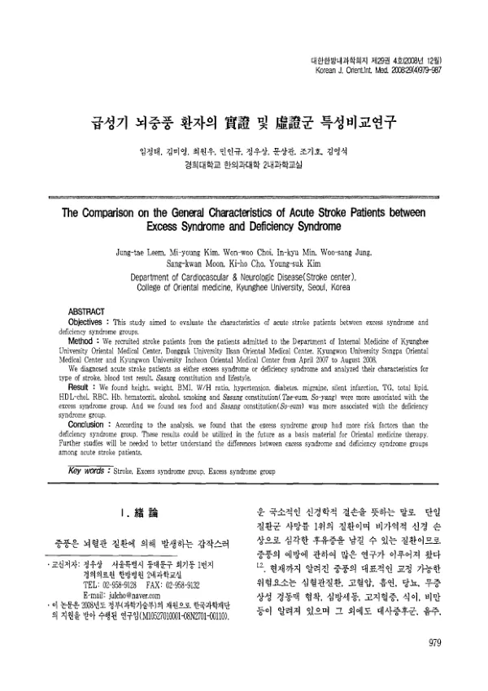

급성기 뇌중풍 환자의 實證 및 虛證군 특성비교연구
Leem Jt, Kim My, Choi Ww, Min Ik, Jung Ws, Moon Sk, Cho Kh, Kim Ys
The Journal of Internal Korean Medicine 29(4):979-987

첫 장 · 오픈액세스First page · open access
논문 소개Summary
한의학은 중풍을 변증으로 접근합니다. 「한의 중풍진단 표준화 위원회」가 화열·습담·어혈·기허·음허 다섯 유형을 정했고, 화열과 습담을 실증으로, 기허와 음허를 허증으로 묶습니다. 변증 유형별 호전도나 병인병리를 다룬 연구는 있었지만, 허실 변증이 중풍 환자의 위험인자와 어떻게 맞물리는지 본 연구는 없었습니다.
2005년부터 한국한의학연구원이 수행한 「중풍 한의변증 진단 표준화 및 위험요인 규명」 사업에서 모은 자료를 썼습니다. 2007년 4월부터 2008년 8월까지 경희대·동국대·경원대 송파·경원대 인천 한방병원에 입원해 CT 나 MRI 로 뇌경색 또는 뇌출혈을 진단받은 발병 4주 이내 환자 가운데 실증군·허증군에 해당하는 587명이 대상입니다. 한방내과 전문의와 전공의가 각각 망문문절로 변증을 매겨, 둘 다 화열이나 습담으로 본 환자만 실증군에, 둘 다 기허나 음허로 본 환자만 허증군에 넣고 나머지는 제외했습니다. 증례기록지와 표준작업지침서를 미리 만들었고 각 병원 임상시험심사위원회의 승인을 받았습니다.
실증군은 키와 체중, 체질량지수, 허리둘레, 엉덩이둘레, 허리엉덩이둘레비가 유의하게 높았습니다. 병력에서는 고혈압과 당뇨, 편두통, 무증상 뇌경색이 많았고, 혈액에서는 중성지방과 총지질, 적혈구와 혈색소, 헤마토크릿, 피브리노겐이 높은 반면 HDL 콜레스테롤은 낮았습니다. 흡연과 음주 비율도 실증군에서 높았습니다. 사상체질은 실증군에 태음인과 소양인이, 허증군에 소음인이 많았고, 허증군에서는 해산물을 선호하는 사람의 비중이 높았습니다. 퇴원 시 최종적으로 당뇨를 진단받은 비율은 실증군 35.2%, 허증군 24.9%로 두 군 모두 같은 연령대의 일반 유병률보다 높았습니다.
한계는 저자들이 스스로 적었습니다. 중풍은 보통 뇌경색 80%·뇌출혈 20%의 비율을 보이는데 이 자료는 뇌출혈이 11%로 낮고 심장색전과 대혈관죽상경화의 비중이 낮은 대신 소혈관폐색이 많아, 전형적인 중풍 집단과 구성이 다릅니다. 네 곳 한방병원의 재원환자만 모았으므로 뇌혈관질환 환자 전체를 대표하지도 않습니다. 따라서 이 특성을 중풍 환자 전체의 것으로 읽어서는 안 된다고 못 박았습니다.
그럼에도 허실 변증에 따라 위험인자의 분포가 갈리고 실증군 쪽에 더 몰려 있다는 것을 처음으로 보였습니다. 저자들은 이를 중풍의 예방과 관리에 허실 구분을 쓸 근거의 첫 자리로 두면서, 중풍 환자 전체를 대표할 집단에서 같은 물음을 다시 물어야 한다고 적었습니다.
Korean medicine approaches stroke through pattern identification. A national committee on standardising stroke diagnosis in Korean medicine settled on five patterns — fire-heat, dampness-phlegm, blood stasis, qi deficiency and yin deficiency — of which fire-heat and dampness-phlegm are grouped as excess and qi and yin deficiency as deficiency. Studies existed on recovery by pattern and on the aetiology behind them, but none had asked how the excess/deficiency division lines up with the risk factors that stroke patients actually carry. This paper aims at that gap.
The data come from a Korea Institute of Oriental Medicine project on standardising pattern diagnosis and identifying risk factors in stroke, running since 2005. Between April 2007 and August 2008, patients admitted to the Korean medicine hospitals of Kyung Hee University, Dongguk University and Kyungwon University (Songpa and Incheon) with cerebral infarction or haemorrhage confirmed on CT or MRI, within four weeks of onset, yielded 587 who fell into either the excess or the deficiency group. A specialist and a resident in Korean internal medicine each assigned one of the five patterns by the four examinations; only patients whom both read as fire-heat or dampness-phlegm entered the excess group, and only those whom both read as qi or yin deficiency entered the deficiency group. A case report form and a standard operating procedure were prepared in advance to narrow the gap between assessors, and each hospital's institutional review board gave approval.
The excess group was significantly higher in height, weight, body mass index, waist circumference, hip circumference and waist–hip ratio. Their histories carried more hypertension, diabetes, migraine and silent infarction; their blood showed higher triglycerides, total lipids, red cells, haemoglobin, haematocrit and fibrinogen, with lower HDL cholesterol. Smoking and drinking were also more common. By Sasang constitution, Tae-eum and So-yang types clustered in the excess group and So-eum in the deficiency group, while a preference for seafood was more common among deficiency patients. Diabetes finally diagnosed at discharge stood at 35.2% in the excess group and 24.9% in the deficiency group, both above the general prevalence for the same age band.
The authors set out the limitations themselves. Stroke usually runs about 80% infarction to 20% haemorrhage, whereas haemorrhage here was only 11%, with fewer cardioembolic and large-artery cases and more small-vessel occlusion, so the composition differs from a typical stroke population. Only inpatients at four Korean medicine hospitals were gathered, which cannot represent all cerebrovascular patients. The characteristics found here should therefore not be read as the characteristics of stroke patients at large.
Even so, the paper was the first to show that risk factors distribute differently across the excess and deficiency division, and that they cluster on the excess side. The authors present this as the first foothold for using that division in prevention and management, and call for the same question to be put to a population that can represent stroke patients as a whole. It belongs to the series of Korean medicine stroke registry studies that the Kyung Hee cardiology and neurology department carried through this period.
인용Cite
Leem Jt, Kim My, Choi Ww, Min Ik, Jung Ws, Moon Sk, Cho Kh, Kim Ys. 급성기 뇌중풍 환자의 實證 및 虛證군 특성비교연구. The Journal of Internal Korean Medicine. 2008;29(4):979-987.